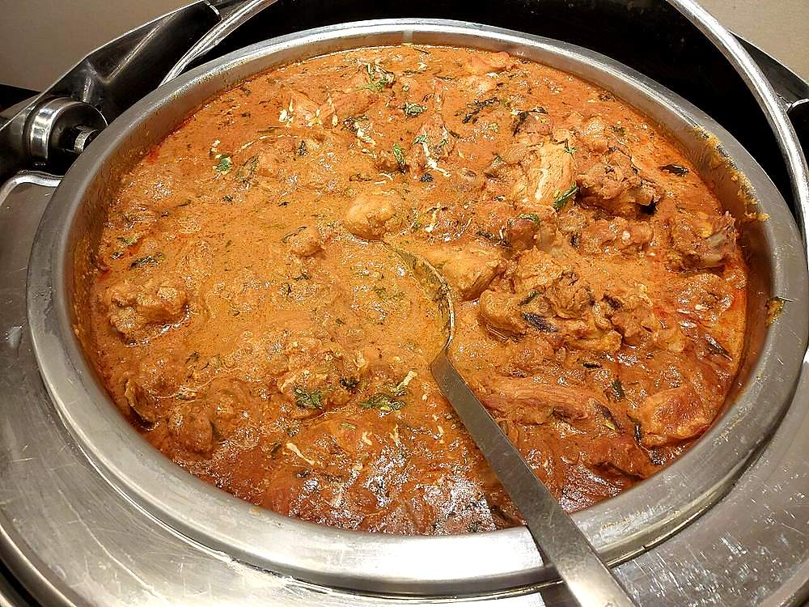

Contains: milk, tree nuts
Ingredients
Quantities for 4.
- 1kg bone-in, cut into 8 pieces Chicken
- 250g, hung 30 minutes in muslin Yogurt
- 4 medium, finely sliced Onionfor birista, the fried onion paste
- 20, blanched and peeled Almonds
- 1 tbsp Poppy Seeds
- 1 tbsp Melon Seedsoptional
- 1.5 tbsp paste Ginger
- 1.5 tbsp paste Garlic
- 5, ground to a paste Green Chilli
- 5 green, ground Cardamom
- 1 tsp, coarsely ground Black Pepper
- 1/4 tsp, ground Mace
- a scraping Nutmegoptional
- a generous pinch, soaked in 2 tbsp warm milk Saffronoptional
- 1 tsp Kewra Wateroptional
- 4 tbsp Ghee
- 150ml, for frying the onion Neutral Oil
- 3 tbsp, chopped Coriander Leavesoptional
- 2 tbsp leaves Mintoptional
- to taste Salt
Cookware
stovetop, blender
Checked against the ingredient list for ten allergens: milk, egg, fish, crustaceans, tree nuts, peanuts, sesame, mustard, soy and gluten. Brands vary, so read the label on anything new to you.
Before you start
- Marinate the chicken for at least 3 hours, or overnight refrigerated. This is a white gravy with no browning to hide behind, so the flavour has to go in before cooking.
- Hang the yogurt in muslin for 30 minutes and discard the whey. Wet yogurt makes a thin gravy that will never thicken without splitting.
- Soak the almonds, poppy seeds and melon seeds in hot water for 20 minutes before grinding, and grind with as little water as possible.
- Bring the marinated chicken to room temperature 30 minutes before cooking so the dum time is accurate.
Method
- Fry the sliced onion in the oil over medium heat until deep gold and crisp, 15 minutes. Drain on paper, cool completely, then crush to a coarse paste.Cool the birista fully before grinding. Warm fried onion smears into an oily sludge instead of a paste.
- Grind the soaked almonds, poppy seeds and melon seeds with 3 tbsp water to a completely smooth paste. Rub a little between your fingers; any grit means keep grinding.
- Mix the hung yogurt, birista paste, nut paste, ginger and garlic pastes, green chilli paste, cardamom, pepper, mace, nutmeg and salt into a marinade.
- Coat the chicken thoroughly, cover, and refrigerate at least 3 hours.
- Heat the ghee in a heavy pan, tip in the whole marinated chicken with all its marinade, and cook uncovered over medium heat 8 minutes, stirring gently.
- Lower the heat to minimum, cover with a tight lid, and cook 30 minutes without lifting the lid.If your lid is loose, seal the rim with a rope of atta dough or lay foil under it. Escaping steam is escaping cooking liquid.
- Uncover, stir once from the bottom, and check the gravy: it should be thick, pale and clinging, with ghee pooling at the edges.
- Stir in the saffron milk and kewra water and cook uncovered 5 minutes more to tighten the gravy.Kewra is powerful. A teaspoon perfumes the dish; a tablespoon makes it taste of soap.
- Rest off the heat, covered, 10 minutes, then scatter over the coriander and mint and serve with sheermal or bagara rice.
Safe temperatures: Chicken and duck are done at 74°C / 165°F, taken at the thickest part and clear of the bone. Reheat leftovers to 74°C / 165°F. FoodSafety.gov
Storage
Keeps 3 days refrigerated. Reheat covered over low heat with a splash of milk, never on high. The yogurt gravy splits above a bare simmer. It does not freeze well.
Nutrition Medium estimate
High protein: 61 g a serving, 39% of the calories
| Per serving484 g | Per 100 g | |
|---|---|---|
| Calories | 627 kcal | 130 kcal |
| Protein | 60.7 g | 12 g |
| Carbohydrate | 20.6 g | 4 g |
| of which sugars | 8.5 g | 2 g |
| Fibre | 4.2 g | 1 g |
| Fat | 33.7 g | 7 g |
| of which saturated | 12.5 g | 3 g |
| of which unsaturated | 18.2 g | 4 g |
Ingredients given to taste count as zero, so the real figures run a little higher. Estimated from raw ingredients using USDA FoodData Central.
More like this: Gluten-free Indian recipes · Hyderabadi recipes
Times, yields, allergens and nutrition are guidance. Use your own judgement on doneness and on storing. More in About.